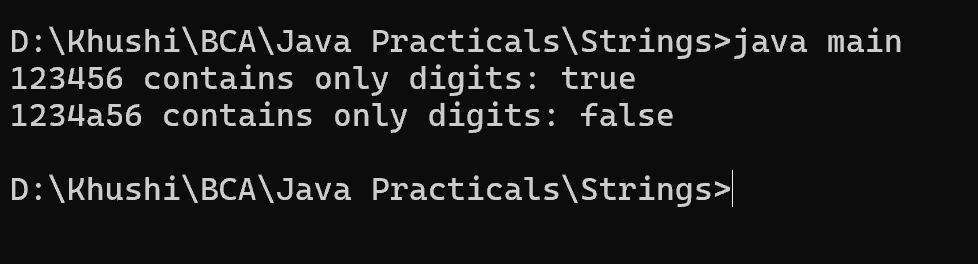

10. Program to check whether a string is a Palindrome
class main {
public static void main(String[] args) {
String str = "madam";
String reverse = new StringBuilder(str).reverse().toString();
System.out.println("Word being checked: " + str);
if (str.equals(reverse)) {
System.out.println("Palindrome");
} else {
System.out.println("Not a palindrome");
}
}
}
